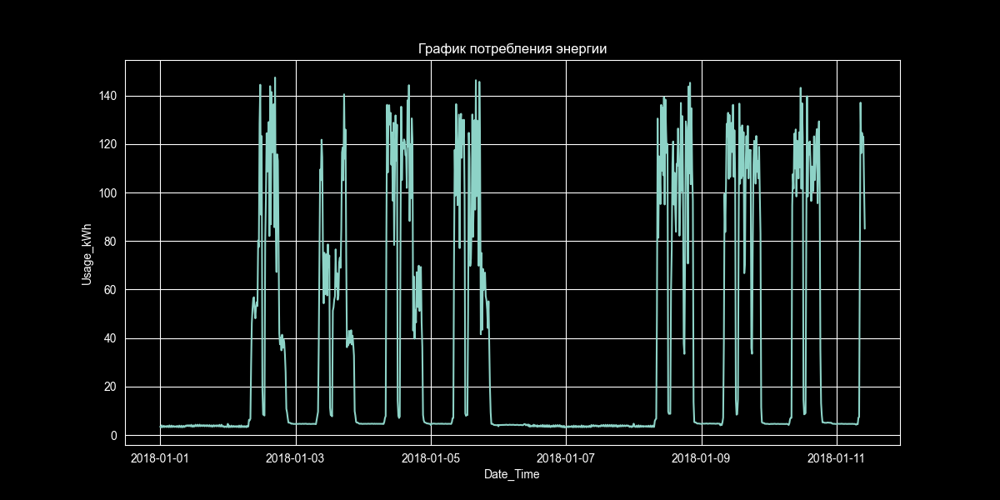
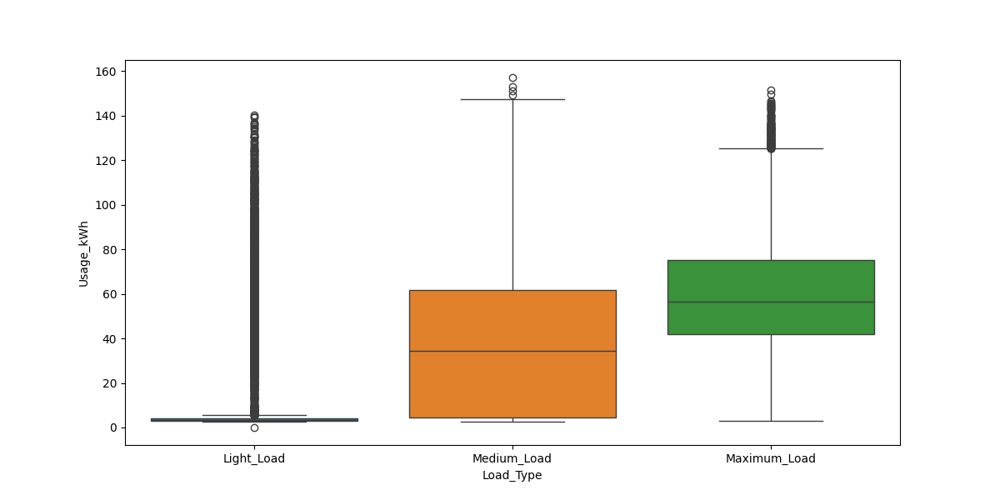
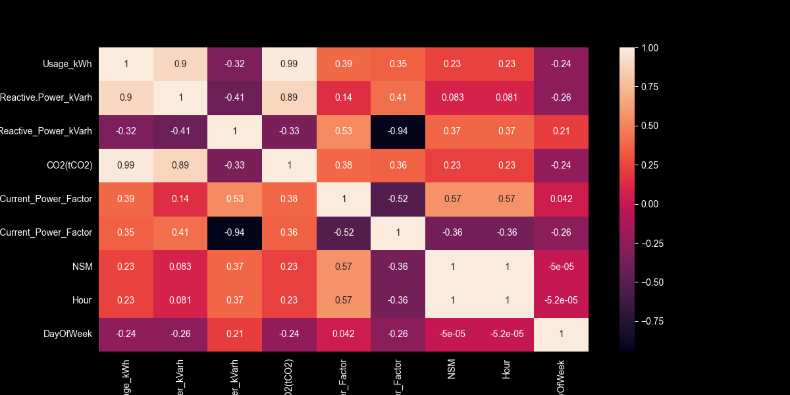
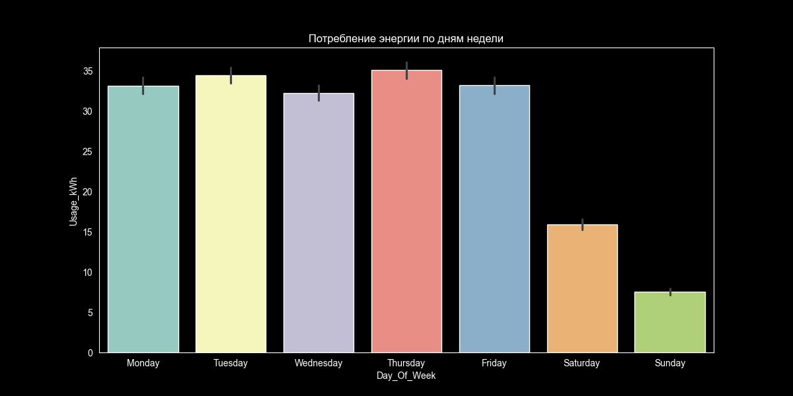
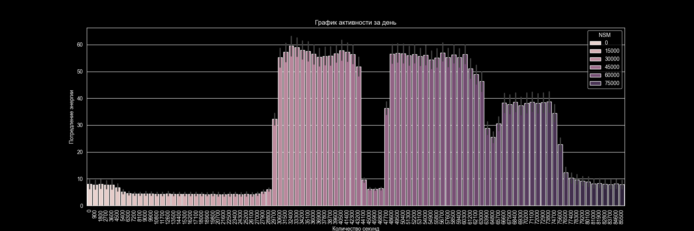
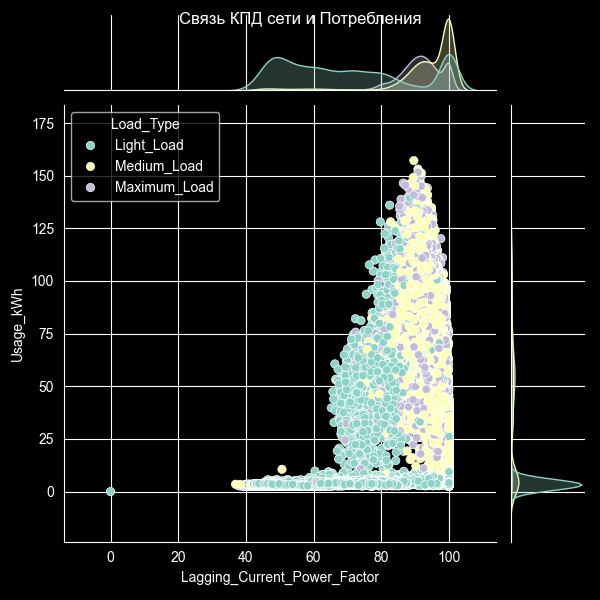
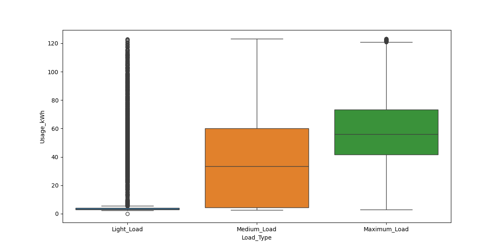
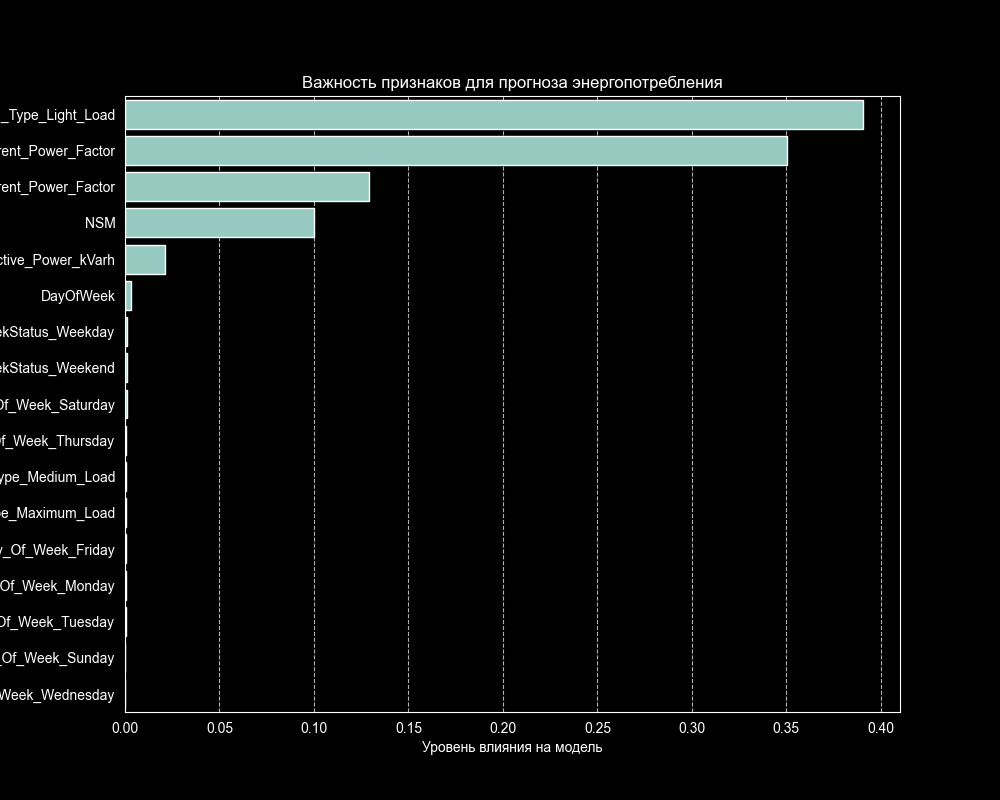

Разработка модели машинного обучения для прогнозирования потребления электроэнергии (kWh) на сталелитейном предприятии на основе электрических параметров сети и временных факторов.
| Признак | Тип | Описание |
|---|---|---|
| Date_Time | datetime | Метка времени (шаг 15 мин) |
| Usage_kWh | target | Потребление электроэнергии (кВт·ч) |
| Lagging_Current_Reactive.Power_kVarh | float | Реактивная мощность отстающего тока |
| Leading_Current_Reactive_Power_kVarh | float | Реактивная мощность опережающего тока |
| CO2(tCO2) | float | Выбросы CO₂ (тонны) |
| Lagging / Leading Current Power Factor | float | Коэффициент мощности (КПД сети) |
| NSM | int | Секунды от начала суток (0–86400) |
| WeekStatus | cat | Weekday / Weekend |
| Day_Of_Week | cat | День недели |
| Load_Type | cat | Light_Load / Medium_Load / Maximum_Load |

📊 Данные первых 1000 записей. Отчётливо видна цикличность с пиками в рабочие часы и спадом ночью. Базовое потребление — 3–4 кВт·ч, пики до 8–10+ кВт·ч.





📈 Joint Plot: Lagging_Current_Power_Factor vs Usage_kWh по типам нагрузки. Maximum_Load коррелирует с более высоким cos(φ), что указывает на активную работу оборудования.
Применён метод межквартильного размаха для фильтрации аномальных значений Usage_kWh:

Train / Test split: 80% / 20%, random_state=42
| Параметр | Значения |
|---|---|
| n_estimators | 50, 100, 200 |
| max_depth | 5, 10, 20 |
| min_samples_split | 2, 15 |
Всего: 18 комбинаций × 7 фолдов = 126 фитов
TimeSeriesSplit — специальный метод для временных рядов, исключает утечку данных из будущего
n_splits = 7
scoring = R²
n_jobs = -1 (все ядра)
max_depth: 10
min_samples_split: 2
n_estimators: 200
Ансамблевый метод, строит множество деревьев решений на случайных подвыборках. Устойчив к переобучению, хорошо работает с нелинейными зависимостями, важность признаков «из коробки».

📊 Наибольшее влияние оказывают: Lagging_Current_Power_Factor, NSM, Leading_Current_Power_Factor и Load_Type. Временные признаки играют важную роль.
Модель сохранена в файл my_model.joblib (21 МБ) для дальнейшего использования и деплоя в производственной среде через библиотеку joblib.